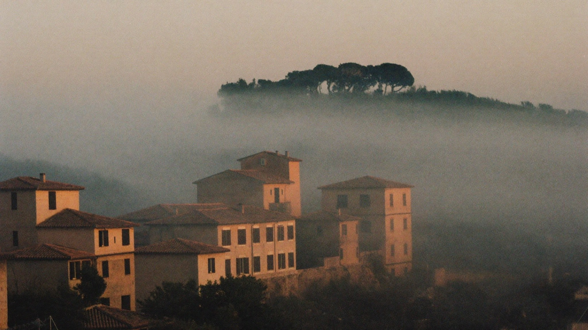
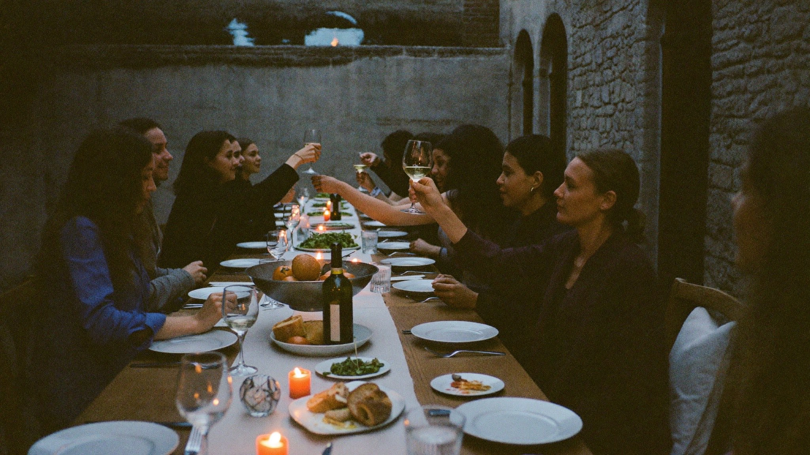
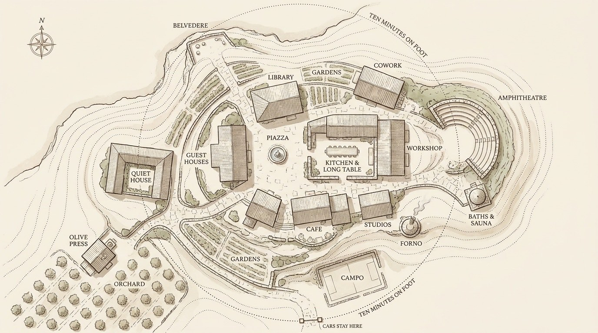
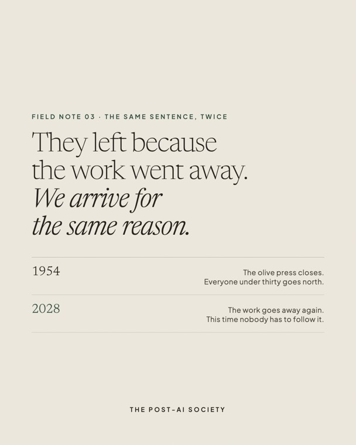
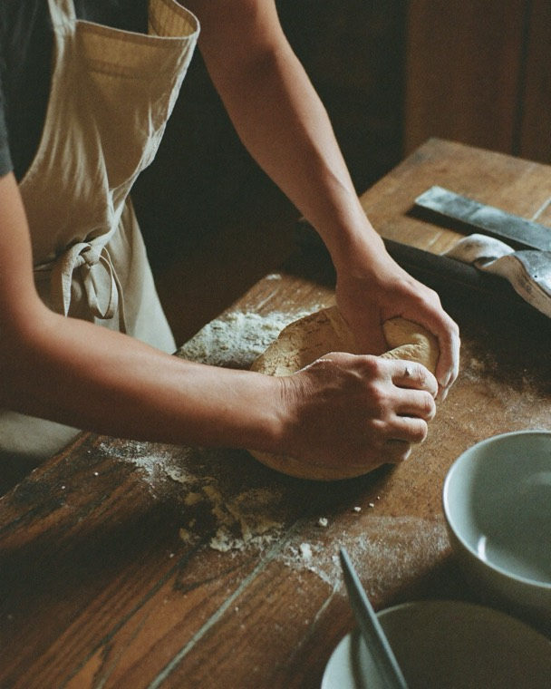
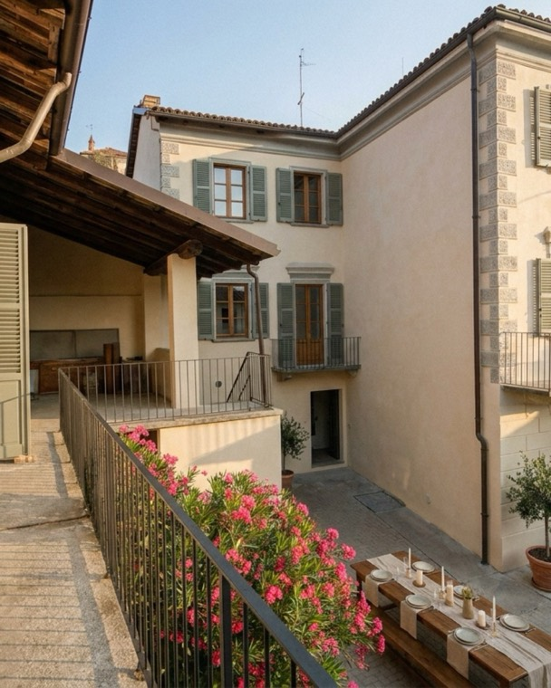
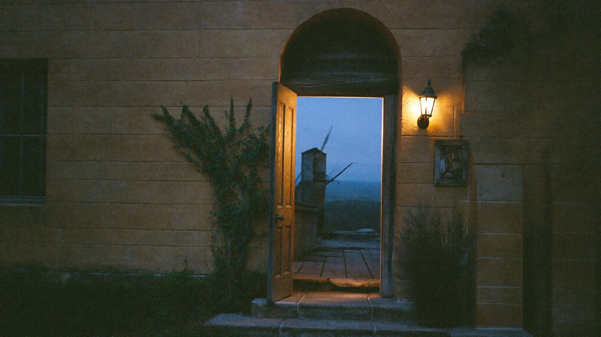

01 · Manifesto
A hill in Italy. Twenty people. Two weeks, spring 2028. One question, asked properly for once: what is a life worth living, now that intelligence is cheap? Not a startup, not a retreat, not a religion — stone, gardens, one long table, and technology kept firmly in its place. Everything below is detail.

Every age builds the rooms it needs. The monastery kept the flame, the academy above Florence asked what the flame was for, the university gave it order, the office — for one strange century — gave it a desk. Nothing has yet been built for what comes after.
The spreadsheets will fill themselves. The emails will answer each other. Being productive becomes like being tall: pleasant, but no longer a plan for a life. What remains is the question the calendar never left room for — what was all that productivity for?
Technology becomes infrastructure.
Human life becomes the point.

The mornings belong to the future. The rest of the day belongs to being human. Nobody checks. Everybody knows.
A small Italian village, restored rather than invented. Stone that remembers six hundred years of dinner. Everything a life needs, ten minutes on foot. The cars stay outside.
We did not draw this plan; we inherited it. A piazza at the heart, because conversation needs a stage. A long table beside it, because trust is built at dinner. We are walking these villages this autumn — counting the steps from the church to the bakery, asking who still lives there, and why they stayed.

Fig. 1 — First campus, working plan. The dotted circle is the whole world you need on foot.
Twenty people at first, chosen the old way: not for what they own, but for what they bring to the table.
The measure of a week here is not output. It is depth — of work, of rest, of company.
Every member gives something the commons needs — a skill, a course, a harvest, a hand.
Gardens are not decoration. Walking is not exercise. Both are how thinking happens.
A guild, not a club. An atelier, not an office. Neighbors, not a network.
We are building this in public, one note at a time — including the notes that say we were wrong.

03 · The same sentence, twice
02 · Dinner number one
01 · The buildingThe rest of the notes — and the ones still to come — live at @postaisociety.
We are not launching. We are beginning. Slowly, in the right order.
Twenty people. One village. Two weeks that behave like a life — the daily rhythm, tested by living it.
Permanent buildings: cowork, workshop, library, kitchen, studios, guest houses. A place with an address.
The campus grows into a living settlement — families, seasons, festivals, a school of its own.
Villages across the world, one culture among them. Members move freely between locations.
Two weeks in an Italian village, spring 2028. Twenty seats. If you want one, say so here — a person reads every entry.
Twenty seats. None filled yet. We are in no hurry — but we are counting.

08 · Apply
Spring 2028 · two weeks
One Italian village · chosen this autumn
Around €1,800, all in
The exact price is published in November, once we have stood in the building and know what the beds cost. Until then it is an estimate — written down early, so you can hold us to it.
Take one of the twenty seats →